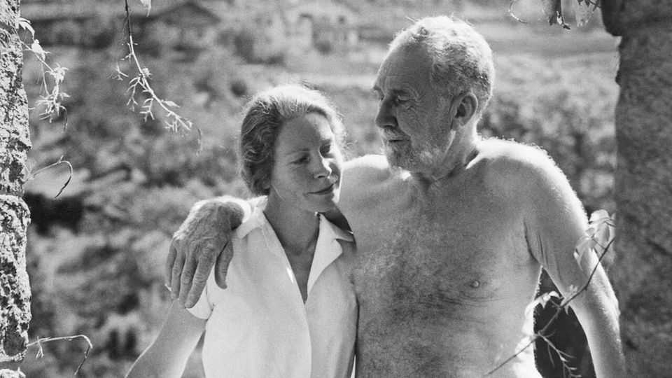

Mary de Rachewiltz devoted her life to defending Ezra Pound
The poet and translator of “The Cantos” died on July 24th, aged 101

Aug 20th 2026
She was still awake when the tall bearded man came into her bedroom to say goodnight. She had hoped he would. Though she was nine, it was a rare treat to get a visit from her father. By the light of the kerosene lamp, he looked at her hands. Her fingernails were filthy. Then he started to rummage in his luggage, for sweets, she hoped. Instead he brought out scissors and, carefully, cleaned and cut her nails. He asked her then, where was her toothbrush? It was somewhere. The next day, he took her to buy one.
This happened in Gais, in South Tyrol, in the house of two kind farm-folk, Mamme and Tatte, who cared for abandoned children. But she was not abandoned, quite. Her parents, the poet Ezra Pound and his mistress Olga Rudge, a violinist (Tattile and Mamile to her then), lived in Venice and paid 200 lire a month for her keep. She did not mind the arrangement at all. From birth she had grown into a Tyrolean peasant child, a shepherdess with blonde plaits who had her own flock and, in secret partnership with her father, ran a miniature bee business for a while. But then at fairly regular intervals she would go to her parents in Venice, to a villa full of books in many languages, to the Lido via vaporetto and to feasts of ice cream. Her cool, willowy mother made her speak no German there, and wear white gloves. It was a small price to pay.
From the start, her two lives ran in counterpoint. She became skilled at defending one against the other. In a poem she wrote later she relished the Pustertal dialect she spoke, words as weighty as sausages and dumplings. Against city people she defended dung-heaps, insisting that a good one smelled mostly of leaves and moss. Tyroleans hated Italians; but her father, arranger of all her Italian treats, was an American Italophile and she adored him. “Babbo” taught her both Italian and English by making her translate “The Cantos”, the huge and obscure poem he spent his life working on, into Italian. For her, that was like being presented with a basket of exotic food she had no idea what to do with, but she tried. Each typed page she produced for him would come back entirely scribbled over, not only with corrections but with newly perplexing thoughts.
From the mid-1920s Babbo had also formed some controversial political ideas. He began to worship Italy’s fascist dictator, Benito Mussolini, extolling him in articles and broadcasts and even presenting him with a copy of the early Cantos. (“Ma questo” said the Boss, “è divertente.”) For Pound, Mussolini embodied the strength and order Italy needed. But then he went further. The true threat to mankind was “international Jewry”. Racial purity should be preserved to strengthen the nation. On Italian radio he begged Franklin Roosevelt not to side with the Allies and said he should be hanged; those broadcasts earned him a charge of treason in absentia. When American troops eventually liberated Italy, in 1945, they captured Pound and caged him. For 13 years he was kept in a locked cell in a psychiatric hospital.
Mary now had two battles to fight. The first was to defend her father against the charge of treason and the imputation of insanity. The latter was clearly ridiculous, as he wrote her long, lucid letters from prison and continued working on “The Cantos”. She managed only one visit; otherwise she imagined him, still tall and dignified in the dining room among the slobbering inmates. His broadcasts and articles, though, were much harder to dismiss. What could she say of his vile remarks about “Jew slime” and “the dog-damn wop”? Only that he had been influenced by the opinions of the time. T.S. Eliot had been antisemitic, too. (She went to see shy, stooping Tom to ask for help; he offered her thin Sawia biscuits, Loneliness personified.) And obviously, later on, the “master of utterance” had lost his grip on words.
That was her second fight. Babbo had been carried away by words all his life. Before the debacle in Italy he had been ranked among the foremost poets of the age; now he was untouchable. But that could not be. She worked on with “The Cantos” and with his other poetry, turning everything into Italian and insisting on the beauty in it. “Beauty is difficult,” Babbo had written in Canto LXXIV; but, like light, it kept breaking through. In her memoir “Discretions”, in 1971, she cited his poetry whenever it could illuminate a phase of her life, or a memory. Her own poetry was a homage to the man who had trained her in it, not least on those evenings when the air had tingled, threatening explosion, as he recited his own. In 1985, 13 years after his death, she at last published the first dual-language edition of “The Cantos”.
She still had more to do. She preserved his papers and first drafts, most of which went to Yale, and lectured about him all over North America. Occasionally she unveiled long-resisted plaques to him. Most important, she had to keep up the re-evaluation. After her marriage in 1946 to a Russian-Italian minor nobleman, Boris de Rachewiltz, they bought Brunnenberg, a crag-bound castle in her beloved South Tyrol. It was a ruin when they found it, but over the years she turned it into a centre of Pound studies. Scholars from the world over came to discuss him amid the splendour of the Alps. She firmly told them, when they arrived, that they could say anything they liked about Pound. And then she would tell them what he really thought, and why.
Babbo himself had stayed there after his release from the asylum, hoping for peace in which to write “Paradise”, intended as the final Canto (with a nod to Dante). But he found the place too cold, and retreated again to Venice with Olga. Mary stayed, because South Tyrol was home. After her idyllic childhood in Gais, she had returned again and again to see Mamme and Tatte. Mamme, with her emotional, fearful Catholic heart and overflowing kitchen, offered true mother-love. But there could be only one father. “I have tried to write Paradise”, he declared, in his “Notes for Canto CXX”: “...let those I love try to forgive/ what I have made.”■